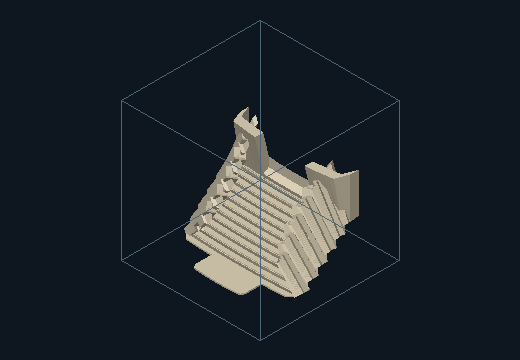
Download proof exports · Individually named source objects · Full report and limitations
Architectural review proof. Usable circulation and occupied alcoves are unverified. The unchanged legacy intersection gate remains flagged; independent adjudication and the additional 20 ft fragment are disclosed in the report.

Measured source influence · Source correspondence
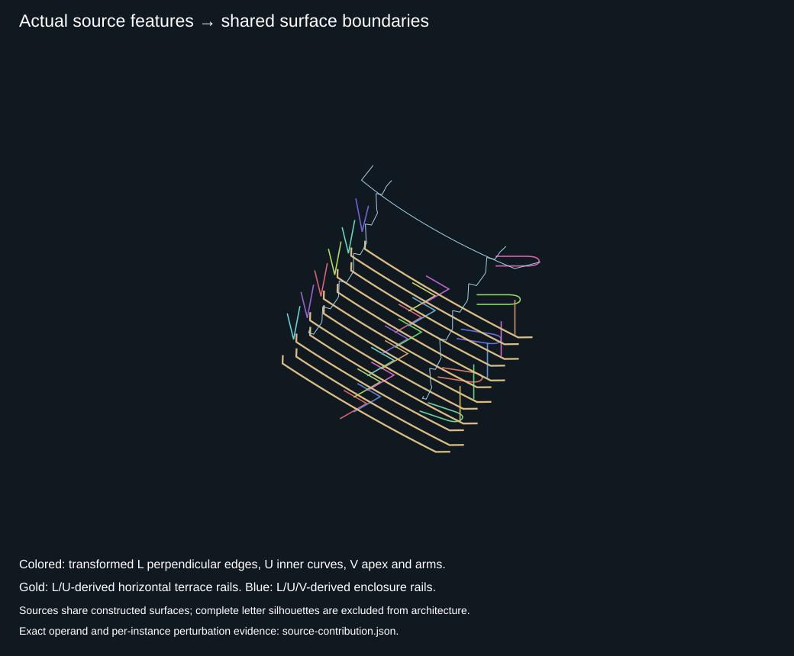
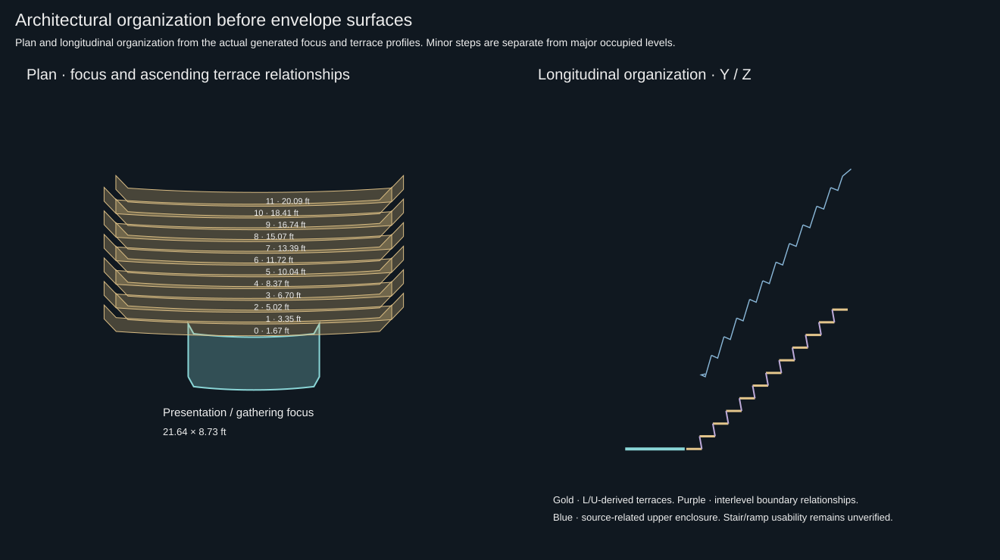
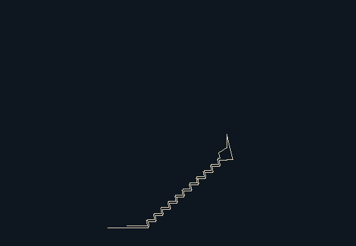
28 source instances · 12 ascending terrace relationships · 34 source-related architectural components
Organization, provenance and measurements · Geometry validation · Compliance and limitations
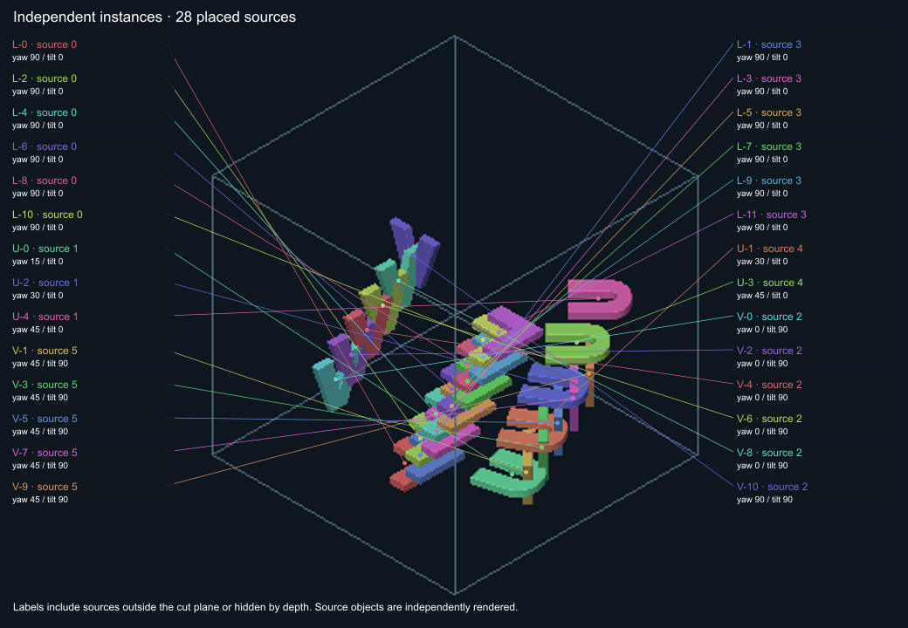
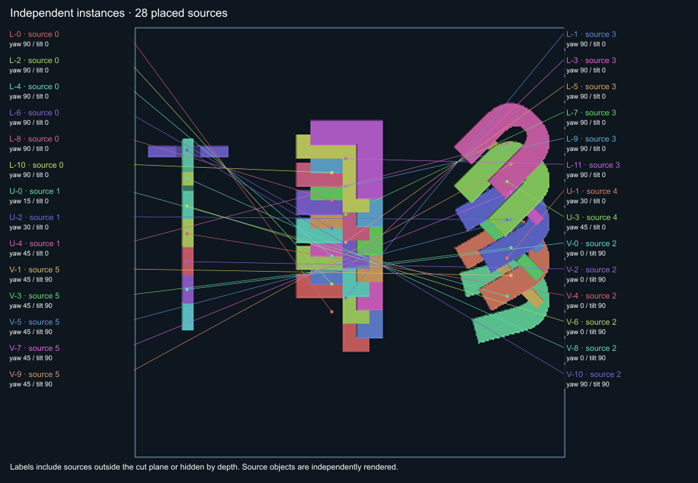
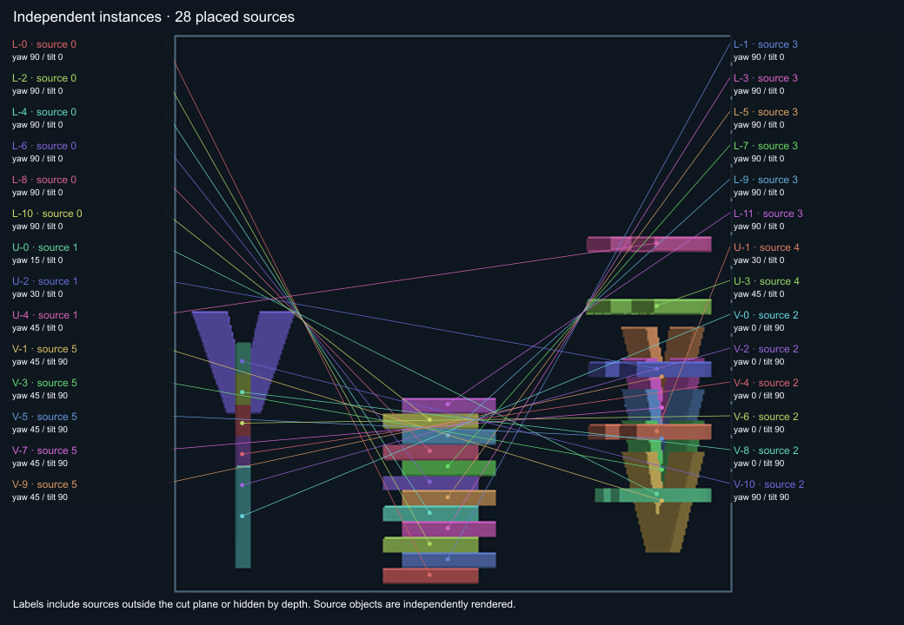
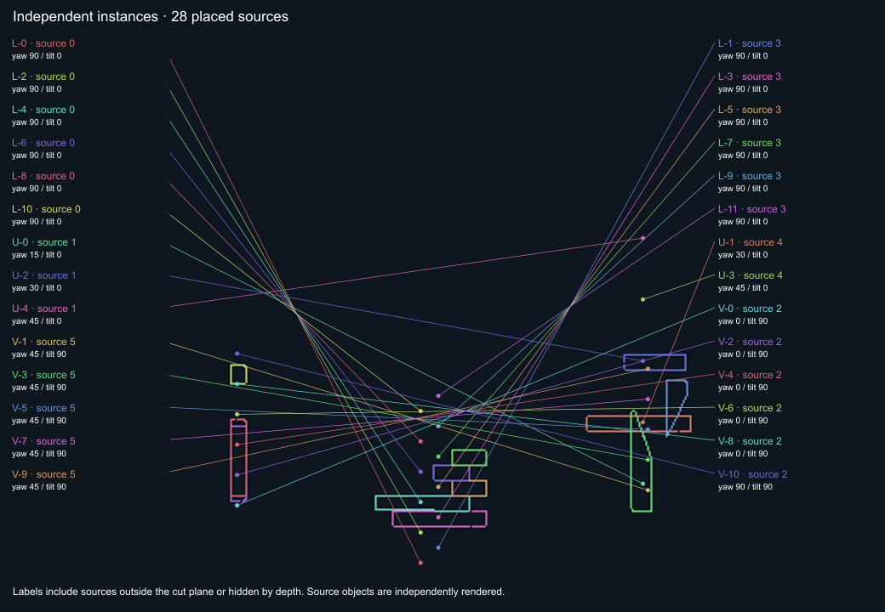
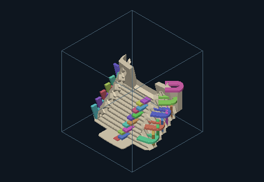
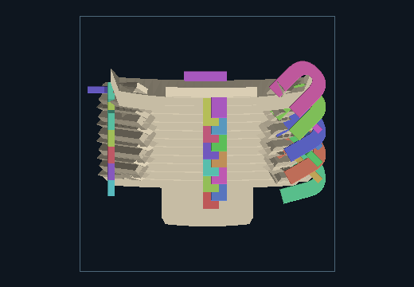
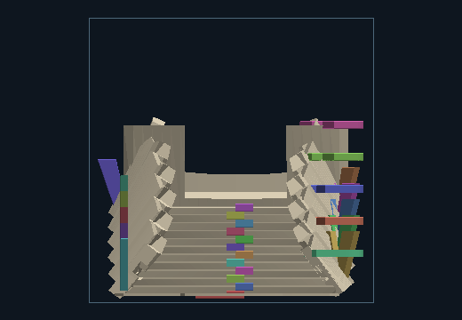
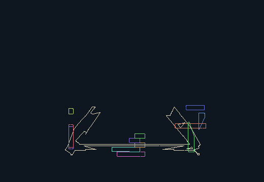
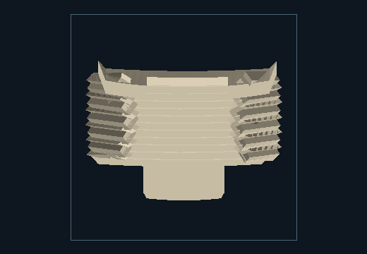
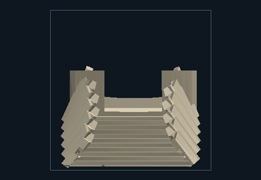
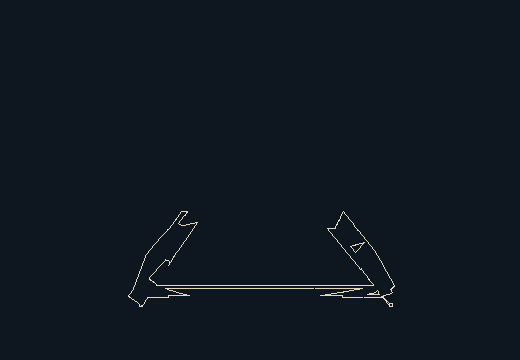
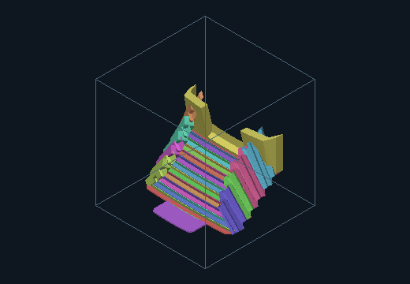
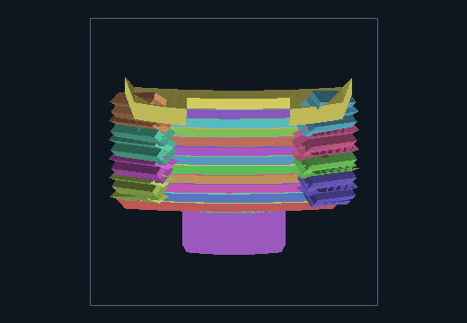
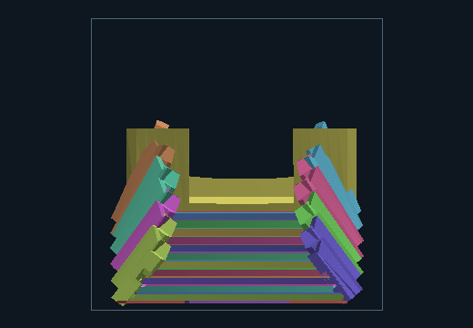
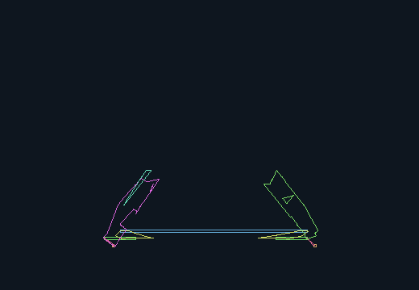
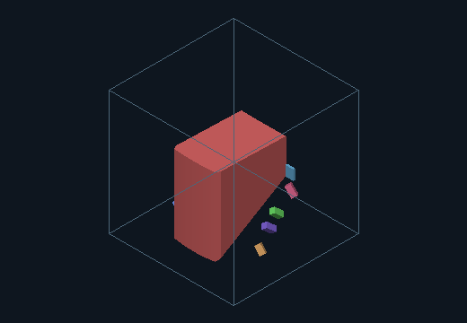
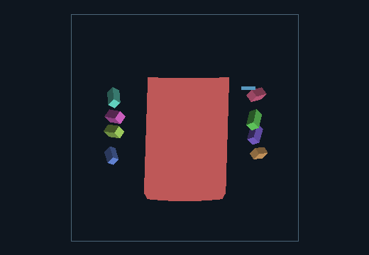
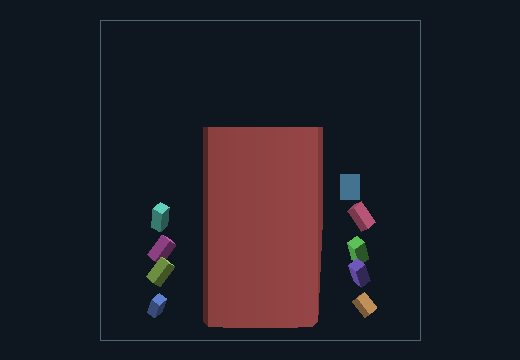
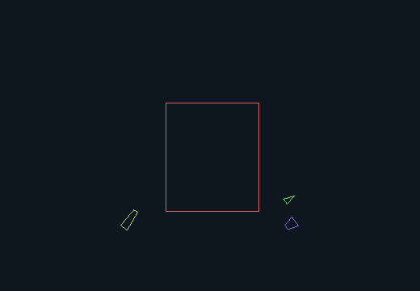
combined-envelope.obj · terrace-0.obj · terrace-1.obj · riser-1.obj · terrace-2.obj · riser-2.obj · terrace-3.obj · riser-3.obj · terrace-4.obj · riser-4.obj · terrace-5.obj · riser-5.obj · terrace-6.obj · riser-6.obj · terrace-7.obj · riser-7.obj · terrace-8.obj · riser-8.obj · terrace-9.obj · riser-9.obj · terrace-10.obj · riser-10.obj · terrace-11.obj · riser-11.obj · enclosure-left-U-0.obj · enclosure-left-U-1.obj · enclosure-left-U-2.obj · enclosure-left-U-3.obj · enclosure-right-U-0.obj · enclosure-right-U-1.obj · enclosure-right-U-2.obj · enclosure-right-U-3.obj · rear-enclosure.obj · presentation-focus-surface.obj · focus-terrace-threshold.obj · primary-gathering-void.obj · recess-enclosure-left-U-0.obj · recess-enclosure-left-U-1.obj · recess-enclosure-left-U-2.obj · recess-enclosure-left-U-3.obj · recess-enclosure-right-U-0.obj · recess-enclosure-right-U-1.obj · recess-enclosure-right-U-2.obj · recess-enclosure-right-U-3.obj · recess-rear-enclosure.obj